Hands-on exercises covering Copilot across mobile, web, Teams, Researcher,
Analyst, Word, PowerPoint, Outlook, Excel, and custom agent building.
📱
Module 1 · On the Go
Copilot Mobile App
~10 min
Use the M365 Copilot mobile app to prepare for your day, catch up on messages,
and interact with Copilot via voice.
Exercise 1.1Day Overview & Voice▼
1Open the M365 mobile app and sign in with your
company credentials.
2Type or tap the Voice icon and try the prompts
below.
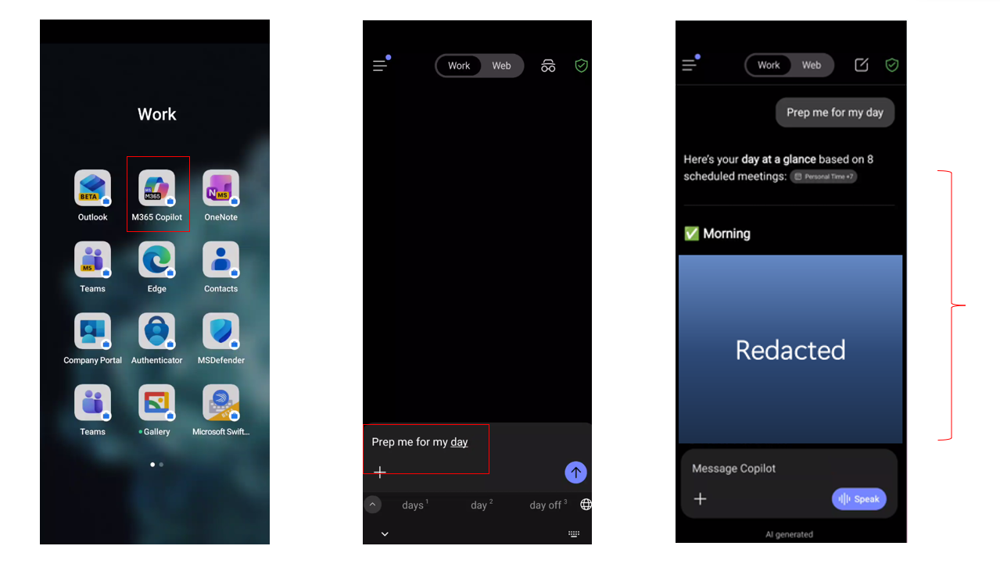
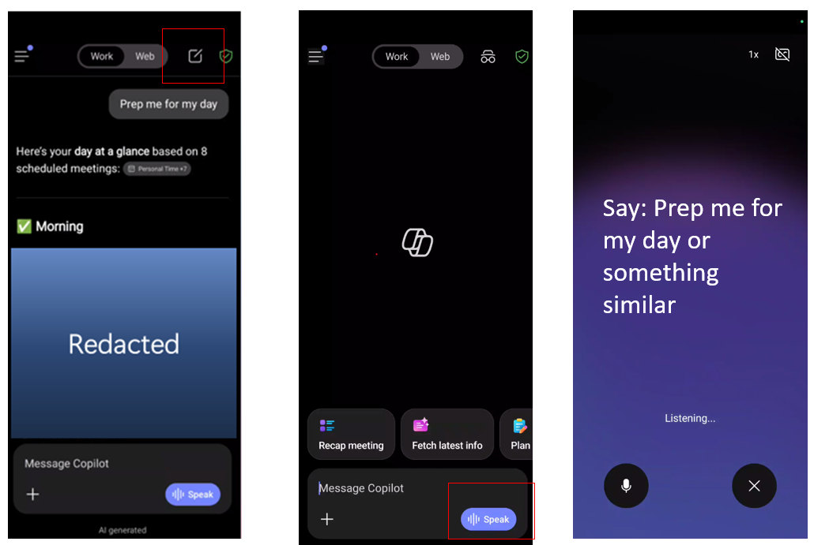
Try This Prompt
Prep me for my day
Follow-up
Summarize my Emails, Teams messages and channel messages from the last
workday.
💡 Tip
Try Outlook Mobile’s built-in prompts: Voice catch-up, triage my inbox, what needs my
reply?, get oriented, find quick wins.
💬
Module 2 · Chat
Copilot Chat (Web & Work)
~25 min
Use Copilot Chat with web data and your work context. Learn to upload files,
personalise Copilot, catch up on communications, and manage your prompts.
Exercise 2.1Analyse a File in Copilot Chat▼
1Go to m365.cloud.microsoft → start a
New Chat → click the “+” sign → “file
upload” and attach a Word or Excel file.
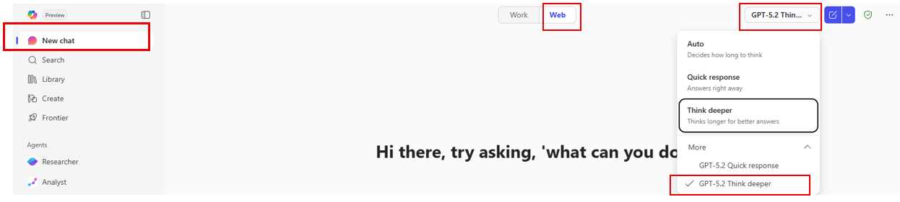
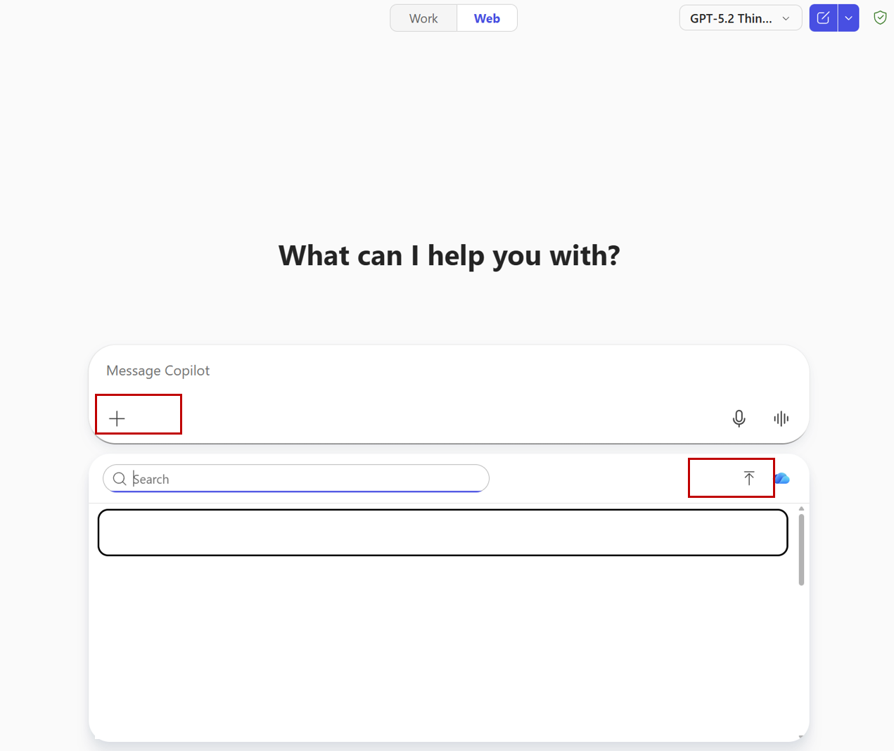
Try This Prompt
Analyze Sales by Region (Revenue, Orders, Avg Order) and Top Categories
(Revenue, Units Sold). Identify the top 2 regions and top 2 categories by revenue, then
explain whether performance is driven by order volume, price/mix (Avg Order), or both.
Provide recommended next steps by region. Present in a well-organized summary with tables on
a separate sheet. Please add the visual charts for sales team and executive summary.
💡 Tip
After each response, Copilot suggests follow-up prompts. Use them for deeper analysis.
Exercise 2.2Memory & Personalisation▼
Teach Copilot about you so responses are tailored to your role and
preferences.
Option 1 — Direct Memory
Hey Copilot remember I work in [Your Company Name] [Department Name]
department
I work for [Company Name] in [department name]. Use [department name]
language. Skip acronyms or specialized terms unless the audience is familiar with them.
Prefer internal documents, emails, and chats over external sources when answering questions
or looking for information.
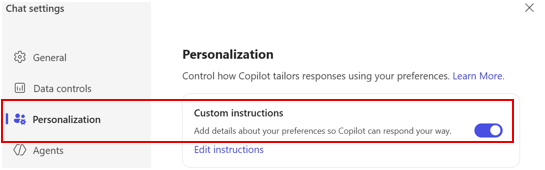
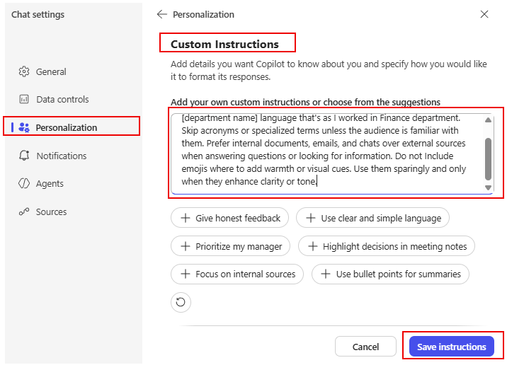
Exercise 2.3Catching Up with Work Mode▼
Email Summary
Summarize my emails from the last week related to [project or customer
name].
Comprehensive Catch-up
Summarize my emails, Teams meetings and IMs as well as channel messages
from the last workday. List action items in a dedicated column. Suggest follow-ups, if
possible, in a dedicated column. The table should look like this: Type (Mail/Teams/Channel)
| Topic | Summarization | Action item | Follow-up. If I have been directly mentioned, make
the font of the topic bold
Meeting Prep
Help me prepare for my upcoming meeting about [meeting subject].
Summarize recent emails, chats, and documents related to it.
Calendar Conflicts
Analyze my calendar for conflicts and recommend how to resolve each
conflict
Work Rhythm
Look across recent documents, emails, chat activity, and file edits to
identify times of day when I do my most focused work, creative work, and reactive work.
Create a profile of my natural work rhythm and give suggestions for structuring my days that
support energy, boundaries, and recovery. Provide me with a list of M365 Copilot features
that would support me at different times of my day.
Exercise 2.4Save, Share & Schedule Prompts▼
1Save: Hover over a prompt → “Save
Prompt” → find it in Copilot Prompt Gallery → Your
Prompts.
2Share: Share icon → “Share to
team”.
3Schedule: “Schedule this prompt” →
set frequency and delivery.
Exercise 2.5Copilot Search▼
Try This Prompt
I was on vacation for the past two weeks. Please find the [Project Name]
information and related communications.
👥
Module 3 · Meetings
Copilot in Teams
~10 min
Use Copilot to turn meeting recordings into summaries, action items, and follow-up messages.
Exercise 3.1Meeting Recap & Analysis▼
1Open a recent recorded Teams meeting →
View Recap → Copilot.
Sales Ops Analysis
Review the meeting transcript and produce a concise, executive-ready
analysis that explains how sales operations changed before and after Copilot adoption across
pipeline analysis, deal forecasting, and customer engagement preparation. Clearly connect
each improvement to measurable business outcomes and conclude with strategic implications
and recommended next steps for sales leadership.
Follow-up Draft
Draft a follow-up message for the executive team that recaps these
decisions and next steps, ready to send in Teams & Outlook.
Exercise 3.2Audio Recap▼
1Open a recorded meeting → View Recap →
Audio Recap → Notes.
2Review: Decisions, Open questions, Agenda, Meeting notes, Follow-up
tasks.
🔬
Module 4 · Premium
Researcher & Analyst
~15 min
Researcher produces deep, multi-source reports with citations. Analyst turns your
spreadsheets into executive-ready analysis.
Analyze my calendar for next week [Enter the dates] and identify the top
3 meetings requiring my active participation. Prioritize client engagements, executive
reviews, and strategic sessions over routine syncs. For each meeting, provide meeting
context, attendee research, key topics, a preparation checklist, and success criteria.
Competitive Intelligence
Create a competitive sales and market intelligence report tailored for
[Your Company Name] Sales department leadership. Summarize key competitor and industry
developments from the last 12–18 months. Evaluate across sales performance management,
go-to-market strategies, customer acquisition, pricing strategies, sales forecasting, CRM
adoption, key account management, and AI/GenAI adoption in sales. Use primary sources and
assign confidence ratings (High/Medium/Low) to major conclusions.
💡 Tip
After Researcher generates a report, you can convert it to Copilot Pages
and then export to Word or PowerPoint.
PremiumAnalyst — Data Analysis▼
1Upload a spreadsheet to the Analyst agent and try
the prompt below.
Sales Performance Analysis
Analyze the sales performance across all regions and product categories
in this workbook. Identify the top 3 strategic opportunities to accelerate revenue growth.
Analyze pipeline health, product category performance, and sales rep performance against
targets. Create a prioritized action plan with specific recommendations.
📄
Module 5 · In the Flow
Copilot in Word, PowerPoint, Outlook & Excel
~30 min
Use Copilot directly inside M365 apps to summarize, draft, create presentations,
manage email, and analyse data.
Exercise 5.1Copilot in Word▼
1Open a Word document → click the Copilot icon
in the ribbon.
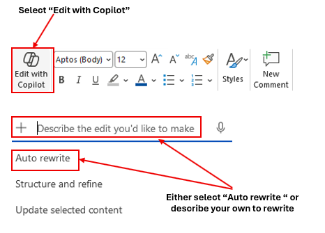
Summarize
Summarize this document in 1 sentence
Draft a Sales Report
Draft a professional Q1 FY2026 Sales Performance Summary for [Your
company name] intended for executive leadership. Include: (1) executive overview, (2) key
sales highlights (bookings, quota attainment, pipeline coverage, win rate, deal size, sales
cycle), (3) notable commercial drivers (top segments/regions/products, major wins, partner
performance, pricing trends), and (4) Q2 FY2026 outlook (pipeline health, priority plays,
risks and mitigations). Use a formal tone and clear section headings.
💡 Tip
Toggle on “Edit with Copilot” to have Copilot modify
the document directly instead of responding in the chat pane.
Exercise 5.2Copilot in PowerPoint▼
Create from Prompt
Develop a presentation about [Your company name]
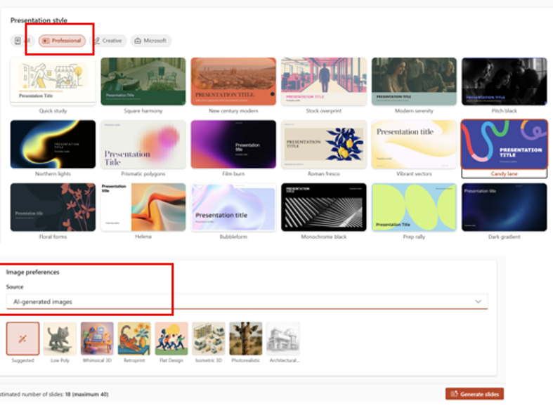
💡 Tip
You can also select “Create a presentation with a file” to generate
slides from a Word document or Excel workbook.
Exercise 5.3Copilot in Outlook▼
Inbox Priority
Which unread emails are most important? Summarize them, synthesize any
related context from my chats and documents, and prioritize the order in which I should
respond.
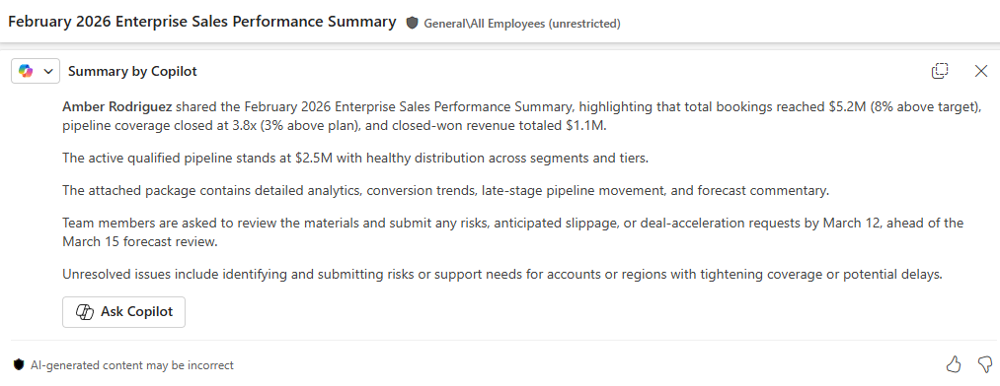
Sales Email Draft
Draft a professional email to an enterprise prospect outlining our
standard engagement approach, including discovery workshops, solution alignment, and
proposed onboarding timeline.
Schedule a Meeting
Schedule a 30-minute Teams meeting with [Name] about the Q1 financial
report.
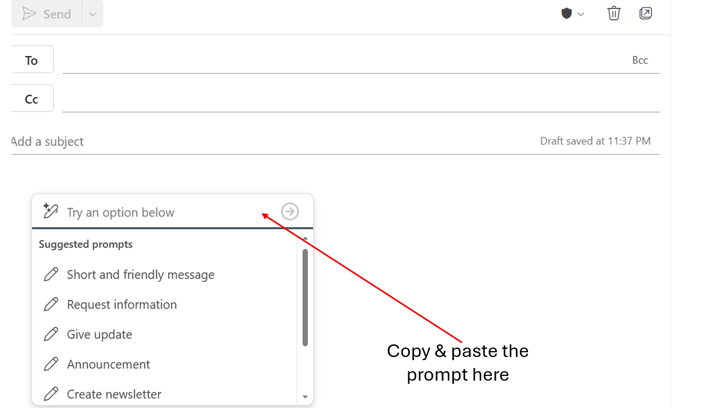
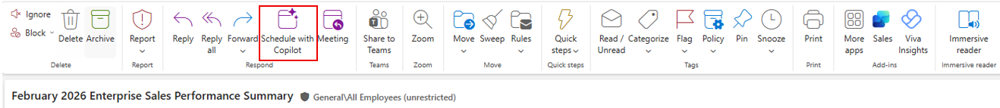
⚠️ Prompting Best Practices
Be specific: ❌ “Help me with my emails” ✔
“Summarize emails from vendors about payment terms received this week” Add context: ❌ “Draft a response” ✔ “Draft a
professional response declining this budget request while maintaining positive stakeholder
relationships”
Exercise 5.4Copilot in Excel — Analysis Prompts▼
1Open a workbook in Excel → click Copilot
→ enable Edit with Copilot.
Executive KPI Narrative
Using the KPIs on this dashboard, write an executive summary that
explains what is driving results and what actions the sales team should take next. Include 3
risks and 3 opportunities. Present in a well-organized summary with tables on a separate
sheet. Please add the visual charts for sales team and executive summary.
Region & Category Analysis
Analyze Sales by Region (Revenue, Orders, Avg Order) and Top Categories
(Revenue, Units Sold). Identify the top 2 regions and top 2 categories by revenue, then
explain whether performance is driven by order volume, price/mix (Avg Order), or both.
Provide recommended next steps by region. Present in a well-organized summary with tables on
a separate sheet. Please add the visual charts.
Rep Performance
Analyze Sales Rep performance using Revenue, Profit, Orders, Avg Order
Value, and Payment Status. Identify which reps are strongest on profitability vs. volume and
highlight coaching opportunities for each rep. Present in a well-organized summary with
tables on a separate sheet. Please add the visual charts.
Create PivotTable
Create a PivotTable from the Sales Data. Rows: Region, Columns:
Category, Values: Sum of Total Revenue ($), Sum of Profit ($), Filters: Sales Rep. Format
the values as currency and sort Regions by Sum of Total Revenue descending.
💡 Tip
The full Excel prompt library covers 7 categories: Sales Dashboard, Monthly Trends,
Sales Data, Product Catalog, Customers, Sales Reps, and Mixed Analysis.
Combine prompts in sequence for deeper insights.
🤖
Module 6 · Agent Builder
Build a Custom Agent
~30 min
Build your own agent powered by your documents. This exercise walks through
creating a Product & Pricing Advisor from scratch.
Agent ModeBuild a Product & Pricing Advisor▼
1Organise your product and pricing documents in a folder.
2Go to copilot.microsoft.com → “New
Agent” → “Create agent”.
3Name the agent and add a description, then paste the instructions
below.
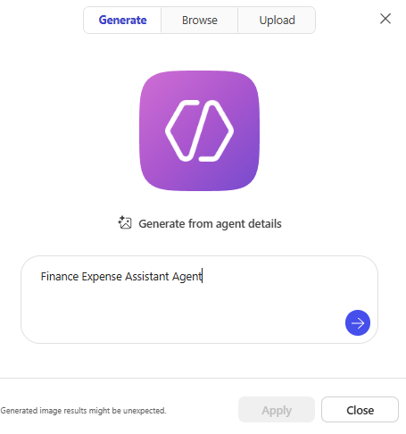
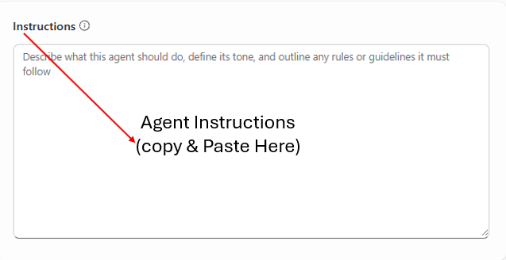
Agent Instructions
You are a Product & Pricing Advisor, a specialized assistant
designed to help the sales team with accurate product information and pricing guidance.
Core Responsibilities:
1. Product Information: Provide detailed product specs including SKU numbers, package sizes,
case quantities, and flavor profiles.
2. Pricing Guidance: Provide pricing based on volume tiers. Calculate total costs. Explain
volume discount structures. Share current promotional pricing.
3. Promotional Information: Communicate active promotions with dates and eligibility.
Recommend promotional bundles.
4. Sales Support: Suggest alternatives, recommend complementary products for upselling, and
help identify the right product mix by customer type.
Guidelines:
- Only provide standard pricing from the official price list. For custom pricing, direct to
the Pricing Team.
- Always include SKU numbers and specify unit of measure.
- Do not process orders, promise delivery dates, or share confidential cost/margin
information.
4Go to Knowledge → upload your documents →
enable “Only use specified sources”.
5Enable “Create documents, charts, and
code” and “Create images”.
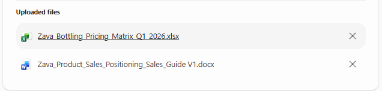
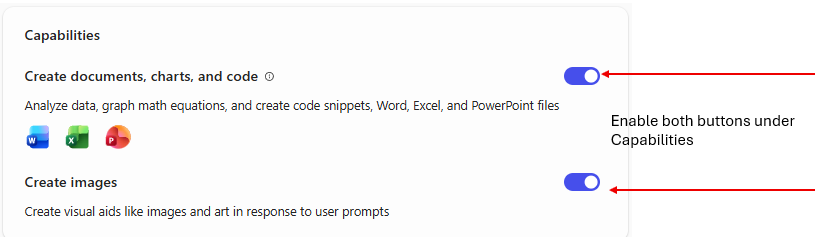
6Test the agent with sample questions about products and
pricing.
💡 Tip
Enabling “Only use specified sources” ensures the agent answers only
from your uploaded documents — no web guessing.